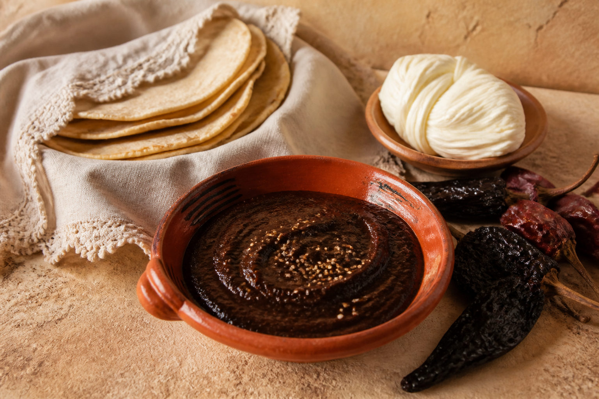

De nuestro mercado a tu mesa
De Oaxaca,
con mucho sabor.
Lo de todos los días, con el sabor de aquí. Antojitos, abarrotes y especialidades para armar tu pedido.
Encuentra tu antojo
DESDE1987OAXACA
Mercado de Abastos, Local 214Lun – sáb · 7 am a 8 pmPedidos por WhatsApp
Fresco, cercano, de aquí
¿Qué se te antoja hoy?
13 productos
Precios en pesos mexicanos